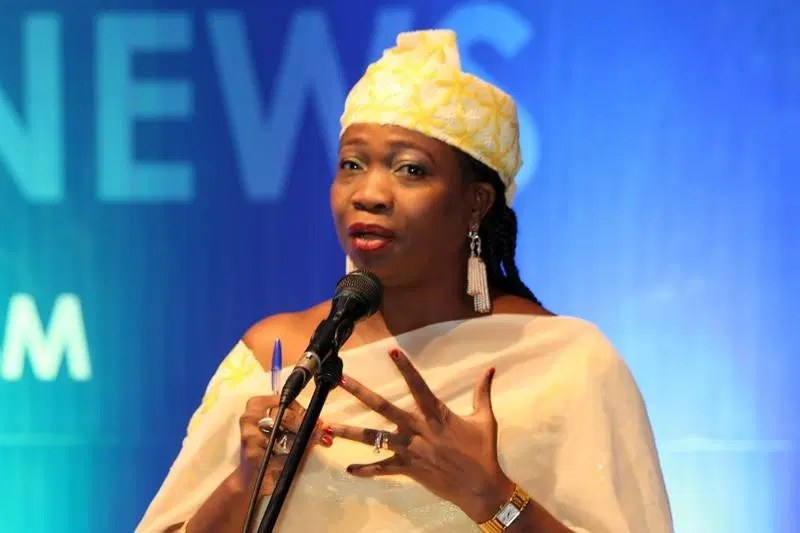

Gambia Central Bank’s planned sack affects 57 Nigerians, NiDCOM kicks

Nigeria’s diaspora commission has opposed a Central Bank of The Gambia directive requiring banks to replace non-Gambian employees with Gambians. The commission’s chair and chief executive, Abike Dabiri-Erewa, said the measure could affect 57 Nigerian professionals. The directive, issued on September 16, gives banks until December 31, 2026, to make the changes.
The Nigerians in Diaspora Commission (NIDCOM) said the affected Nigerians work at four Nigerian-owned banks and have valid residency and work permits. Dabiri-Erewa described the directive as deeply concerning, while acknowledging The Gambia’s right to promote employment for its citizens.
NIDCOM highlighted the banks’ role in the Gambian economy. It said they hold 37.2 per cent of total deposits, valued at GMD35.3 billion, and account for 32.6 per cent of loans, worth GMD7.67 billion. The banks also represent 37 per cent of industry assets, valued at GMD44.78 billion, and 34.5 per cent of investments in Central Bank bonds. The commission added that they provide 90 per cent of funding for the National Water and Electricity Company.
Dabiri-Erewa said employment policies should take account of existing contracts, valid work permits and ECOWAS protocols on free movement. She argued that removing qualified African professionals sits uneasily with efforts to encourage investment and regional cooperation across the continent.
NIDCOM called on the Gambian central bank to reverse the blanket directive and consult the Nigerian High Commission in Banjul and other stakeholders to reach an amicable resolution. It also urged Gambian authorities to uphold ECOWAS integration and the longstanding cordial relations between Nigeria and The Gambia.
Source: Vanguard